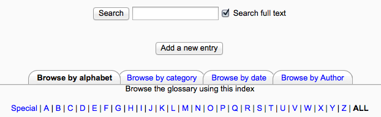
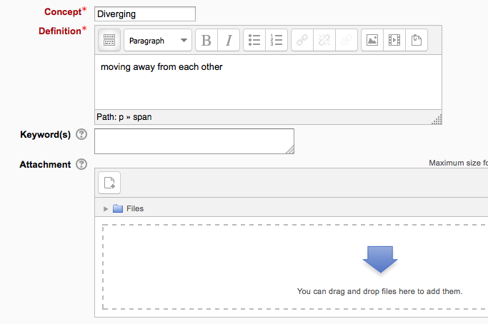
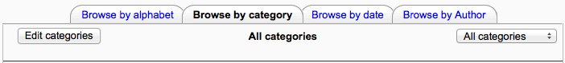

- When you first create a glossary, click “Save and display” to be taken to the “Add a new entry” screen.
- Alternatively,click on the glossary link and click the “Add a new entry” button in the centre of the screen or the Administration block.

- Enter the word you want to define in the Concept text field.
- Add the definition of the word or concept.
- If you want to add an attachment, such as a picture or an article, you can either drag/drop it or click the “Add” button to upload via the File picker

- You can add or edit categories by clicking the “Browse by category” tab

- If there are synonyms you want to include with the entry, add them to the Keyword(s) text area. Enter one word per line.
- Select the auto-linking options (see below) and save the changes.
This entry should be automatically linked
If site-wide glossary auto-linking has been enabled by an administrator and this is set to “yes”, the entry will be automatically linked wherever it appears.
This entry is case sensitive
This setting specifies whether matching exact upper and lower case is necessary when performing automatic linking to these entries. For example, if this is turned on, then a word like “html” in a forum posting will NOT be linked to a glossary entry called “HTML”.
Match whole words only
If automatic linking is enabled, then turning this setting on will force only whole words to be linked. For example, a glossary entry named “construct” will not create a link inside the word “constructivism”.
Categories may be created to help organize your glossary entries. If you’ve enabled autolinking, the category names can be linked along with individual entries.
To create a glossary category:
- Click the “Browse by category” tab in the main page of the glossary.
- Click the “Edit categories” button on the left side of the page.
- Click the “Add category” button on the resulting Categories page.
- Give the category a name.
- Choose whether you want the category name autolinked as well.
- Click the “Save changes” button.
If you autolink the category name, any occurrence of those words will be linked. When a student clicks on the link, they will be taken to the “Browse by category” page of the glossary.
You can browse glossaries according to the following options:
- Browse by alphabet
- Browse by category (if there are any categories added)
- Browse by date (you can sort entries by last update or by creation date)
- Browse by author
You can also search for a given word using the Search field. Checking the ‘Search full text’ option (on the right side of the Search box) allows searching for a given word in any position in the text. This can take longer and return more entries than you might wish, but it is thorough. If you do not check the “Search full text” box, the search only looks for the term names. The index below lets you browse the glossary according to a given letter.
If entries require teacher approval before being publicly posted, the number of entries will appear in a link.
To approve the teacher clicks the link and then the ‘approve’ tick/checkmark icon.
If an entry is approved by mistake, it can be undone by clicking the ‘undo approval’ circle with a line through it icon.
At the top right of the main glossary page, you’ll see a little printer icon. If you click the icon, Moodle will open a new browser window and present all the words and definitions in a printer-friendly format.
To print the glossary:
- Click the printer icon at the top of the main glossary page.
- From the newly opened window, choose Print from the File menu of your browser.
- Once the word list has printed, close the printer-friendly format window.
Note: Teachers are always provided with a printer-friendly format link. To enable students to print a glossary, set “Allow print view” to Yes on the edit glossary page.
If you enabled comments on the glossary entries, users can annotate the definitions in the word list. When you look at a word in the glossary list, you’ll see a blue “Comments” link in the lower left-hand corner.
When you click the link, a comments box opens up. Add your comment then click the “Save changes” button.
Once you’ve saved your comment, Moodle will display all of the comments for the entry. When you return to the main glossary page, you’ll see a new message next to the speech balloon telling you how many comments there are for the entry.
Glossary entries can be exported and then imported into another glossary.
- In Administration > Glossary administration > Export entries click the “Export entries to file” button.
- Save the automatically generated XML file on your computer.
When the entries are imported into another glossary, the user performing the import will be listed as author of all the entries.
A copy of a glossary may also be made by backing up the activity. To include glossary entries in the backup, ‘Include enrolled users’ must be ticked in the initial backup settings. When the glossary is restored, the authors of the entries will be the same as in the original glossary.
Users with permissions to export glossary entries to a portfolio such as Mahara or Google Docs can do this via the export icon at the bottom of each glossary entry.
Glossary entries can be imported via XML file in Administration > Glossary administration > Import entries. See Import glossary entries for details.
In places such as forum posts and quizzes, terms will be automatically highlighted and linked if they are in the glossary. Sometimes, this may be unwanted. To avoid this on a case-by-case basis, click on the blue Filters link in the activity’s Settings block. There you will be able to turn off the glossary auto-linking feature for that particular activity while keeping it enabled elsewhere on the course.